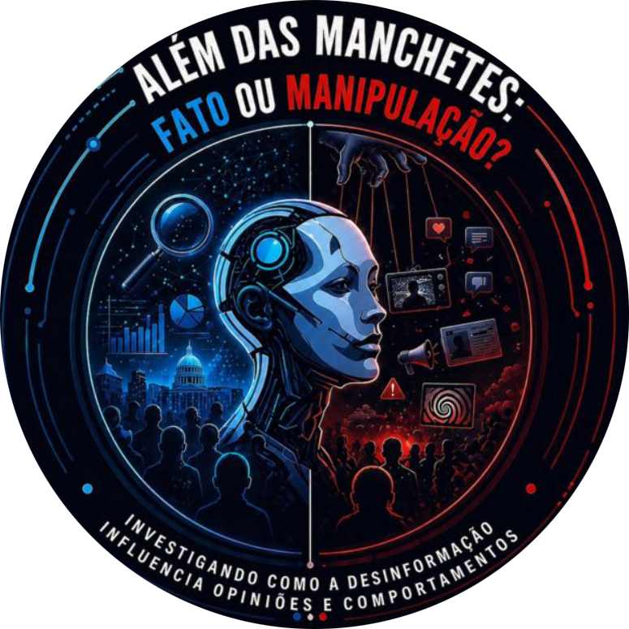

Observe a manchete
Títulos exagerados e apelos emocionais podem tentar provocar uma reação imediata.

Além das ManchetesNem tudo que viraliza é verdade. Aprenda a reconhecer a desinformação, investigar fontes e desenvolver um olhar crítico sobre o que você consome e compartilha.
Uma manchete impactante não é garantia de informação verdadeira.
Insira uma frase ou manchete para identificar sinais comuns de conteúdo sensacionalista ou potencialmente enganoso.
É a divulgação de informações falsas, imprecisas ou retiradas de contexto, muitas vezes com a intenção de confundir, manipular opiniões ou provocar reações.
Ela pode aparecer em textos, imagens, vídeos, áudios e até em conteúdos que parecem ter sido produzidos por fontes confiáveis.
Títulos exagerados e apelos emocionais podem tentar provocar uma reação imediata.
Procure quem publicou, quando publicou e quais fontes sustentam a informação.
Compare a informação com veículos confiáveis e fontes oficiais ou especializadas.
Os meios mudam, mas o uso de boatos para influenciar a opinião pública acompanha a história.
Durante conflitos europeus, panfletos com informações falsas eram distribuídos para desmoralizar o inimigo e manipular a opinião pública.
A transmissão radiofônica de Orson Welles foi confundida por parte do público com notícias reais sobre uma invasão marciana, demonstrando o poder da mídia sobre a percepção da realidade.
O e-mail popularizou mensagens em massa sobre doenças, conspirações e alertas que circulavam sem verificação.
As eleições americanas expuseram o uso sistemático de fake news em redes sociais e levaram ao debate sobre o caso Cambridge Analytica.
Ferramentas de inteligência artificial permitem criar vídeos, áudios e imagens falsas convincentes em pouco tempo.
Informações falsas podem afetar diferentes áreas da sociedade.
Boatos sobre vacinas e tratamentos podem levar pessoas a decisões prejudiciais e dificultar ações de saúde.
Notícias falsas sobre candidatos, partidos e eleições podem reduzir a confiança nas instituições.
Boatos sobre crimes ou ameaças podem provocar acusações injustas e colocar pessoas em risco.
Informações falsas sobre empresas e produtos podem gerar prejuízos e desconfiança no mercado.
Informações falsas podem afetar decisões individuais, debates públicos e a confiança nas instituições.
Dados e referências reproduzidos do conteúdo original do projeto. Verifique os estudos e seus contextos antes de utilizar os números em trabalhos ou publicações.
Conheça episódios em que rumores, manipulação e informações falsas tiveram consequências reais.
Especialistas alertam que não existe comprovação científica de que água com limão previna ou cure infecções virais. O tratamento deve ser orientado por profissionais de saúde.
O vídeo divulgado é antigo e mostra um teste de rotina realizado dias antes da eleição oficial, sendo utilizado fora de contexto para gerar desconfiança.
Teoria conspiratória sem base científica. A COVID-19 é causada por um vírus e não pode ser transmitida por ondas de rádio.
Adote hábitos simples antes de acreditar ou compartilhar qualquer informação.
Não confie apenas no título. Descubra qual site publicou e se é um veículo jornalístico reconhecido.
Notícias antigas podem ser compartilhadas como se fossem atuais para provocar medo ou indignação.
Maiúsculas, pontuação excessiva e apelos emocionais pedem atenção redobrada.
Pesquise o mesmo assunto em veículos confiáveis e fontes oficiais.
Questione também as informações que parecem confirmar suas próprias opiniões.
Quando uma informação parecer duvidosa, procure fontes especializadas e organizações de checagem.
Escolha um tema e descubra técnicas comuns usadas em mensagens enganosas.
Responda cinco afirmações e veja seu resultado.